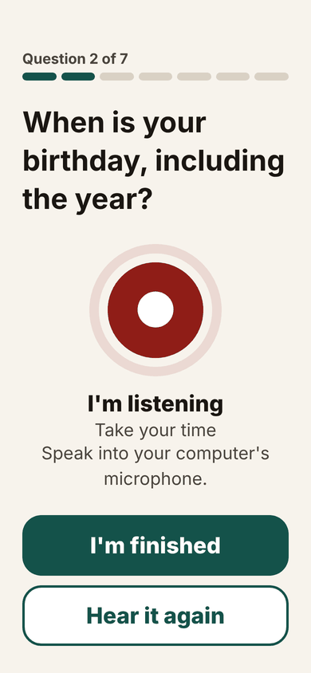
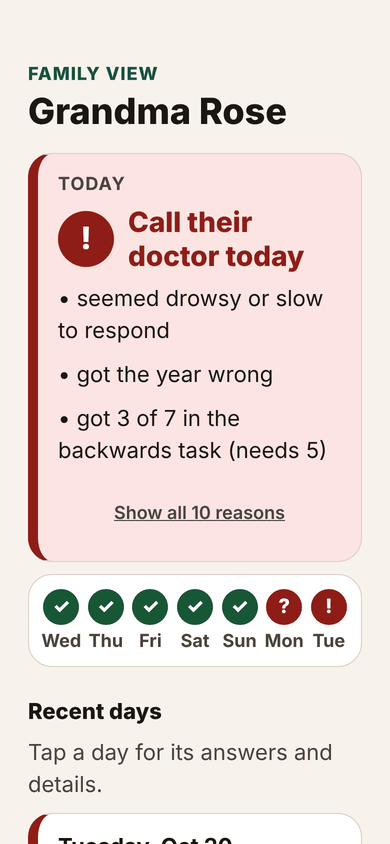

How it works
| 4AT part | What the app does |
|---|---|
| Alertness | Notices slow or missing replies |
| Orientation | Age, birthday, place, year |
| Attention | Months backwards, a rotating version, or repeating digits |
| Acute change | Voice vs. their normal, plus the family’s word |
Results follow the 4AT bands: Looks like their usual self, Keep an eye on it, Call their doctor today.

